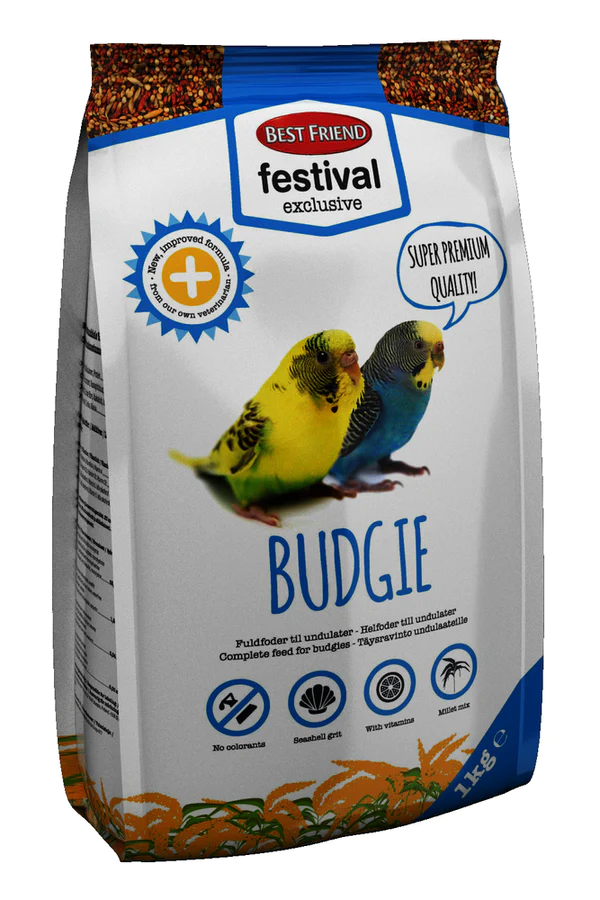
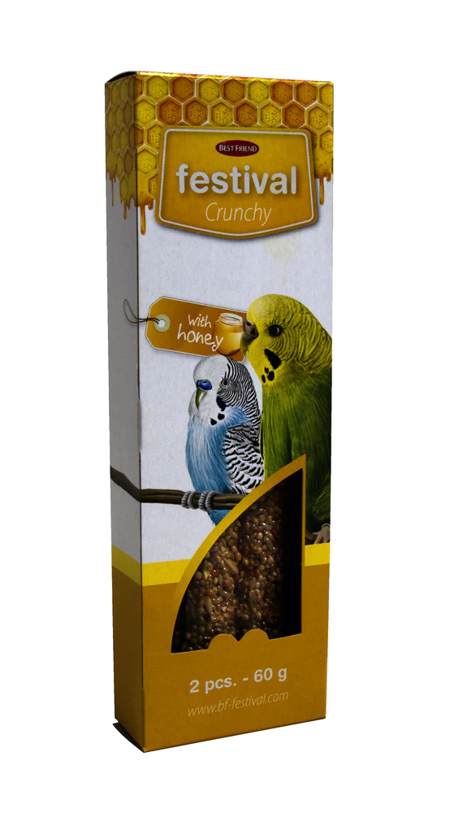

Our Products

BEST FRIEND FESTIVAL EXCLUSIVE BUDGIE
Best Friend Festival einkarétt heilfóður nær yfir daglega næringarþörf ungviðanna þinna. Þetta fóður inniheldur gris - sem stuðlar að heilbrigðri meltingu - og nauðsynleg vítamín, steinefni, snefilefni og nauðsynlegar amínósýrur. Berið fóðrið fram fyrir fuglinn þinn að vild í hreinni skál.

BEST FRIEND FESTIVAL CRUNCHY BUDGIE BAR
Hunangsnammi sem á að bera fram sem viðbót við fullkomna næringu til að auka fjölbreytni í mataræðinu. Fræstöngin er hengd upp í loft eða vegg í fuglabúrinu og skipt um þegar gæludýrið hefur borðað það. Vertu alltaf með ferskt vatn til staðar.